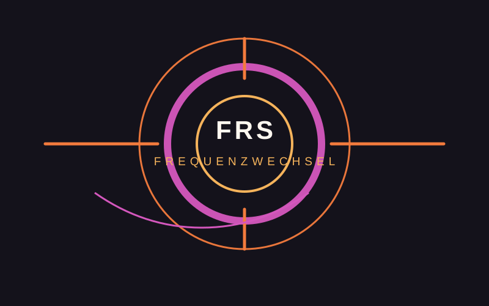

01
Warm-up / Deep → HouseCordelia
Vinyl-orientierter Einstieg: Atmosphäre, Groove und Aufbau.

FRS FrequenzwechselPlenum PitchENTSCHEIDUNGSVORLAGE · EINMALIGES SPECIAL
Ein einmaliges elektronisches DJ-Special für FRS – klar begrenzt, technisch planbar und redaktionell anschlussfähig.
HEUTE BRAUCHE ICH
Redaktion · Sendeplatz · Dauer · Technik · nächste Zuständigkeit.
01 · FORMAT
House, Techno, Trance, Electro und Übergänge – dramaturgisch als gemeinsame Nachtfahrt statt drei isolierter Sets.
02 · LINE-UP
Vinyl-orientierter Einstieg: Atmosphäre, Groove und Aufbau.
Verdichtung in Richtung Techno, Electro und Club-Dynamik.
Peak und spätere Nachtfahrt mit härteren, hypnotischen Übergängen.
03 · RUNDOWN
Begrüßung, Konzept, Musikmeldung / Hinweise.
Warm-up und Aufbau.
House / Electro → Techno.
Peak-Time und Nachtfahrt.
Gemeinsamer Abschluss, Credits, Ausblick.
04 · TECHNIK
05 · DREI WEGE
Eine passende Redaktion lädt das Special ein und übernimmt den redaktionellen Rahmen.
+ wenig StrukturaufwandDas Plenum bestätigt ein begrenztes Special mit klarer technischer und redaktioneller Zuständigkeit.
+ eigenständiger PilotErst nach Pilot, Workshops und Studioeinweisung als reguläres Format weiterentwickeln.
+ langfristige Option06 · BEREITS VORBEREITET
AKTUELLER STAND
07 · HEUTE FESTZURREN